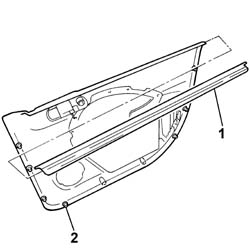

7005E10 front side door inner panel - r r for replacement
- Path
- Procedures > 70 FITTINGS > 7005 PASSENGER COMPARTMENT FRONT SIDE DOORS > 7005E front side door trim > 7005E10 front side door inner panel - r r for replacement
- Kind
- repair procedure (removal / refitting; the operation number is the code)
- Applies to
- all engines; all production periods
- Interactive page
- https://sloeber94.github.io/elrnDB-fPnd/en/#/2753064
Applies to: all engines; all production periods
 Removing
Removing
 Refitting
Refitting7005E12 corner cover of one front side door, lh or rh r r
7005C44 interior handle panel - r r
For versions with manually-operated windows, carry out the operation:
7005D38 front side door manual window mechanism handle ring-nut - r r
7005E08 front side door interior panel r r
7005C52 interior opening handle - r r
1. Withdraw and remove the inner weather strip.
2. Recover the fixing buttons.

Applies to: all engines; all production periods
Refitting
RemovingFit the inner weather strip in its seating on the panel.
Fit the fixing buttons, making sure to replace damaged ones.
7005C52 interior opening handle - r r
7005E08 front side door interior panel r r
For versions with manually-operated windows, carry out operation:
7005D38 front side door manual window mechanism handle ring-nut - r r
Topics linked from this page (5)
- 7005C44 interior handle panel - r r
- 7005C52 interior opening handle - r r
- 7005D38 front side door manual window mechanism handle ring-nut - r r
- 7005E08 front side door interior panel r r
- 7005E12 corner cover of one front side door, lh or rh r r